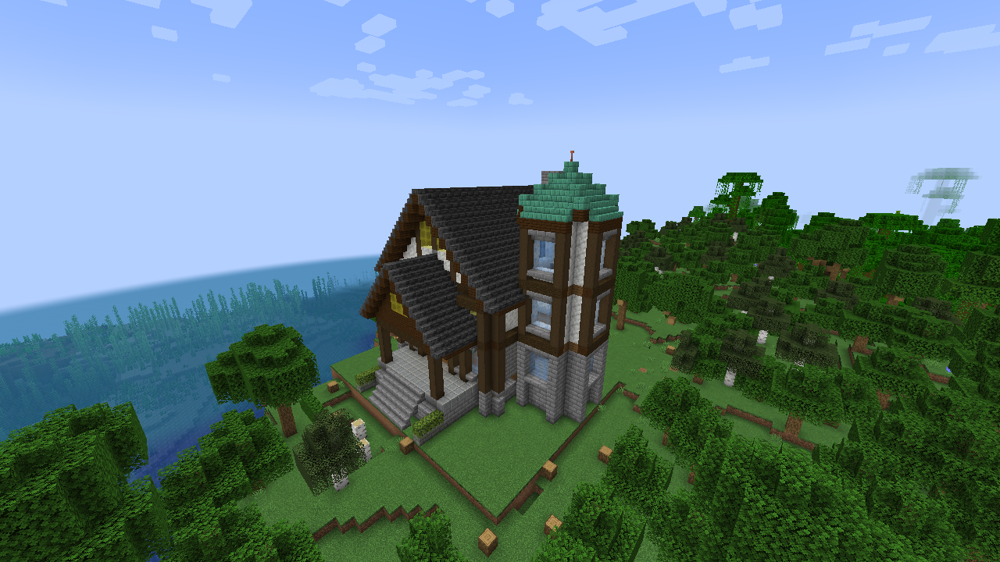
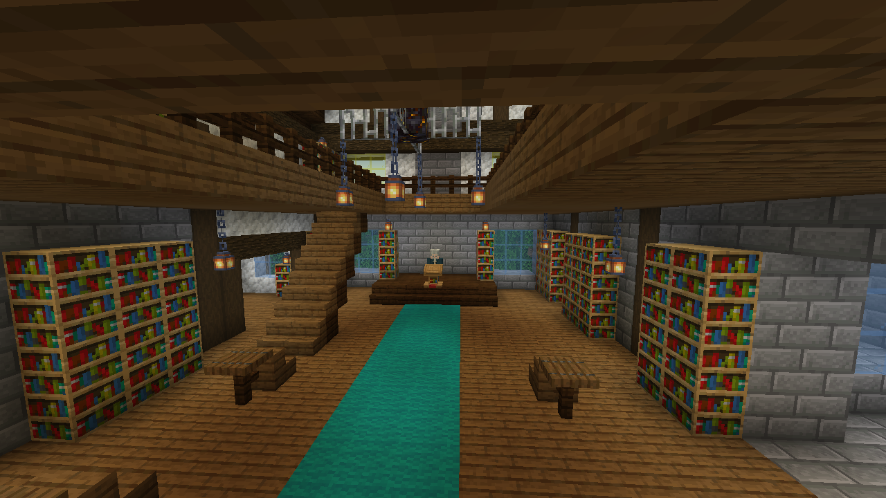
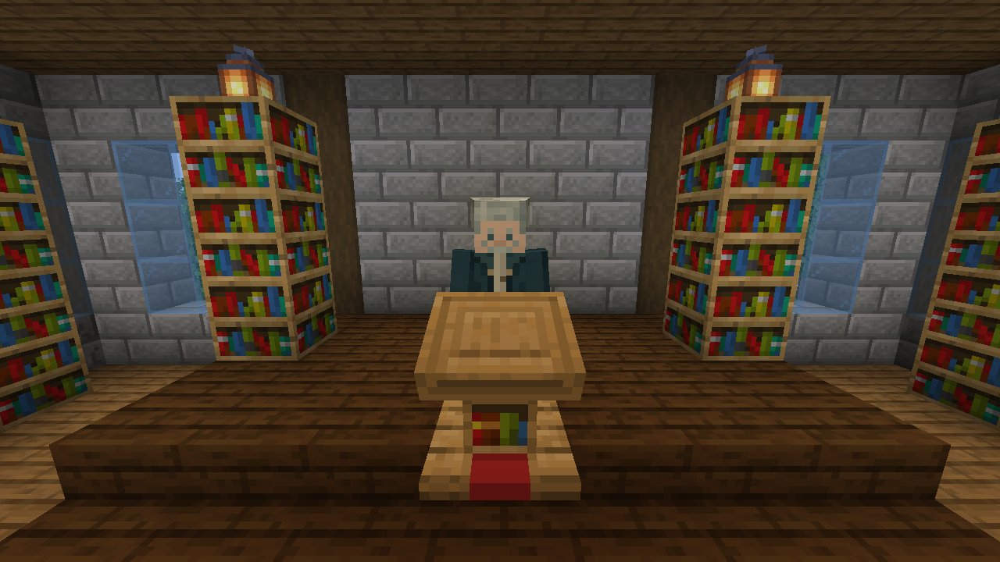
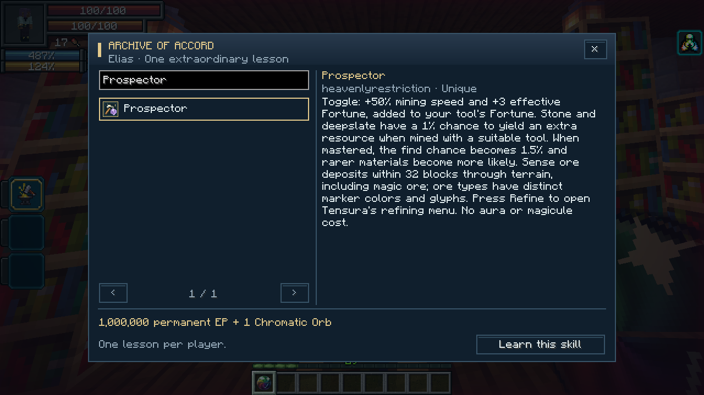
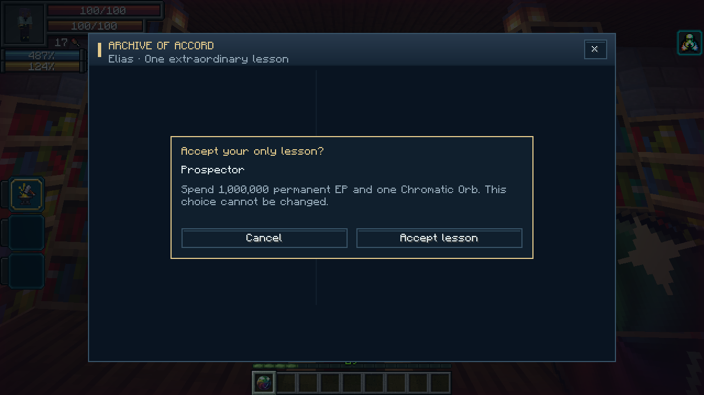

On this page
Finding the archive
Look for a slate-roofed library with a copper-crowned tower, projecting timber frames, a rear chimney and recessed windows in forests, plains, meadows and savannas. Inside are a reading bay, upper gallery, staircase, tower rooms and Elias’s teaching dais. Archives use a sparse 128-chunk placement grid; unsuitable biomes can make them farther apart. They generate in new chunks, including newly explored regions of existing worlds.
Marauder's Map can search for heavenlyrestriction:mentor_archive. With commands enabled, use:
/locate structure heavenlyrestriction:mentor_archive
Elias stays inside and is protected from ordinary damage. Each archive contains a mentor, but visiting another archive does not grant another lesson.
Building and room views
   

Existing buildings keep their generated layout.
Taking a lesson
Interact with Elias, search by skill name or mod, select a Unique and read its description. Choose Learn this skill, review the price and confirm. The skill is permanent and starts unmastered.


The default payment is one Chromatic Orb and 1,000,000 permanent EP. Permanent aura and magicule capacities pay proportionally to your current permanent reserves. Equipment and temporary bonuses cannot pay the bill; some permanent EP must remain afterward. There is no additional magicule acquisition charge. The EP price is configurable in tensura-additions-mentor.toml.
Canceled, unaffordable or blocked attempts consume nothing. Successful purchases cannot be exchanged or refunded. Death, reincarnation, losing the skill and Parallel World Jumper do not restore the lesson.
Available skills
The catalogue includes normal Unique skills from Tensura and installed addons, including synthesis partners such as Great Sage, Godly Craftsman, Split Mind and Prospector. Already learned skills cannot be purchased. Existing acquisition restrictions and native unlock protections still apply.
Anti-Skill and Chained are not purchasable. Parallel World Jumper is offered only in supported private single-player worlds. Ultimate skills and skills in the Godly tier are not taught. Servers can extend the heavenlyrestriction:mentor_excluded skill tag with a datapack.
After learning the missing component, master it and meet the usual Hephaestus or Metis synthesis requirements. Taking a lesson does not complete an Ultimate synthesis.